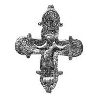

Catalog › CE-0982 · KOR2003-III.1.1.8
Valvă de față de encolpion cu balamale rupte, relief și niello, sfânt militar în medalionul de sus
sec. XII (1101–1200) · Dorohobuj (litopisețean), regiunea Rivne (raionul Hoșcea), Ucraina · Muzeul Regional de Istorie Locală Rivne (RKM), inv. № КП 1255/ПАК 355/727
single valve of a reliquary cross, aramă; c. XII (1101–1200); found at Dorohobuj (litopisețean), regiunea Rivne (raionul Hoșcea), Ucraina; kept at Muzeul Regional de Istorie Locală Rivne (RKM).


Identificare
- Categorie
- Valvă izolată
- Material
- Aramă
- Tehnică
- Turnare în relief; Gravare (incizie); Niello
- Dimensiuni
- Î 83 × L 70 mm
Iconografie
- Avers
- Sfinți militari
- Descriere avers
- Valvă de față cu balamalele rupte. Imaginea reliefată a lui Hristos este prelucrată suplimentar cu dalta; imaginile până la piept ale adstanților de pe capetele laterale ale brațelor și ale unui sfânt militar în medalionul de sus sunt executate cu linii adâncite, parțial umplute cu niello; nimburile sunt completate cu ornament punctat, marginile valvei sunt încadrate cu crestături oblice, la capul fiecărui personaj sunt făcute cruciulițe cu puncte.
- Inscripții
- X; IC XC; ΘҮ МР Н ѠАНН
- Limba
- Greacă
Datare și atribuire
- Datare
- sec. XII (1101–1200)
- Centru
- Necunoscut
- Tipologie
- Korzukhina–Peskova 2003, tip III 1 1
Descoperire
- Localitate
- Dorohobuj (litopisețean)
- Regiune
- regiunea Rivne (raionul Hoșcea)
- Țară
- Ucraina
- Context
- Fortificație
- Anul
- 1975
Păstrare și referințe
- Colecție
- Muzeul Regional de Istorie Locală Rivne (RKM)
- Nr. inventar
- № КП 1255/ПАК 355/727
- Bibliografie
- G. F. Korzukhina, A. A. Peskova, Древнерусские энколпионы. Нагрудные кресты-реликварии XI–XIII вв., Sankt-Petersburg, 2003 [Korzukhina–Peskova 2003], p. 103, cat. nr. III 1 1/8, reprodusă la Табл. 54 (planșe, p. 296). Bibliografie citată în sursă: Никольченко 1976, 18–19; Прищепа, Никольченко 1996, 96–97.
- Figura
- Табл. 54
- Planșe
- Korzukhina–Peskova 2003, Табл. 54 (planșă fără paginație proprie în PDF; p. 296 tipărită)
- Observații
- Datare după Peskova: sec. XII. Circumstanțe: Săpături pe fortificația Dorohobuj, Iu. M. Nikolcenko, 1975; împrejurările descoperirii necunoscute. Inscripții adâncite: X sub medalionul de sus, IC XC lângă umărul drept al lui Hristos, ΘҮ МР Н ѠАНН sub mâinile lui Hristos; lectura de verificat pe original. Coordonate: nu sunt date în sursă.
Citare: Corpus Encolpiorum, CE-0982, Valvă de față de encolpion cu balamale rupte, relief și niello, sfânt militar în medalionul de sus, --root/piese/KOR2003-III.1.1.8/ (accesat 2026-10-17).